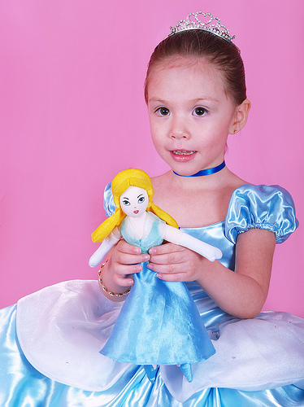

Curriculum VitaeMyrna Gonzalez Cota |
|
|  |
Datos personales Cedula: 0152125 Fecha de Nacimiento: 25 Diciembre de 1977 Nacionalidad: Mexicana Estado Civil: Casada Estudios Realizados Primaria: Jose Maria Morelos y Pavon Secundaria: Juan Escutia No 11 Preparatoria: Colegio de Bachilleres de Baja California Plantel Morelos Estudios Universitarios: Instituto Tecnologico de Mexicali Otros Estudios Realizados: COBACH Plantel CD Morelos: Tecnico en Productividad CENPRODE: Certificacion de Servidor Publico INEE: Instructor de aplicadores Centro de Idiomas ITM: Ingles 85 por ciento Referencias Personales Ing. Ma Enedina Aguirre Garcia Cel (686) 1- 19 45-42 CP Raul Villalon Renteria Cel (686) 1-19-30-84 Lic Maria Teresa Diaz Vargas Cel (686) 1-22-04-64 |